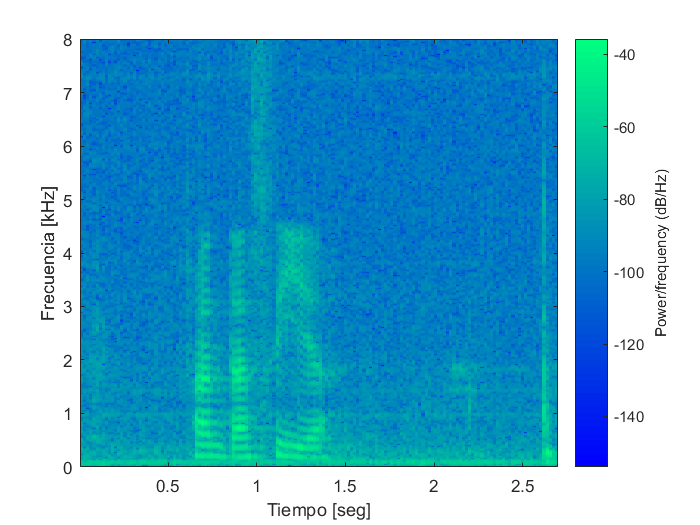
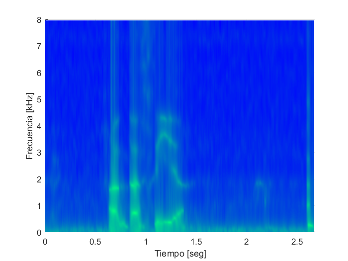
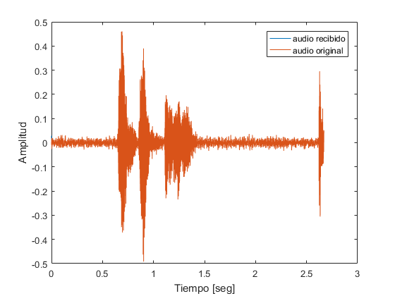
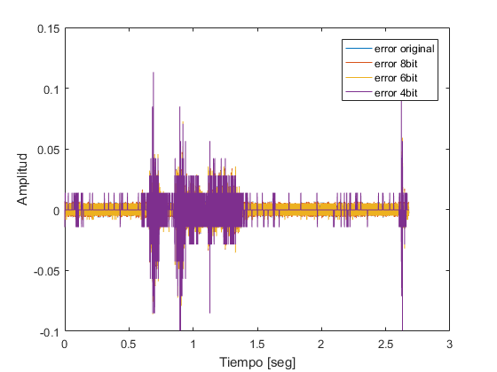
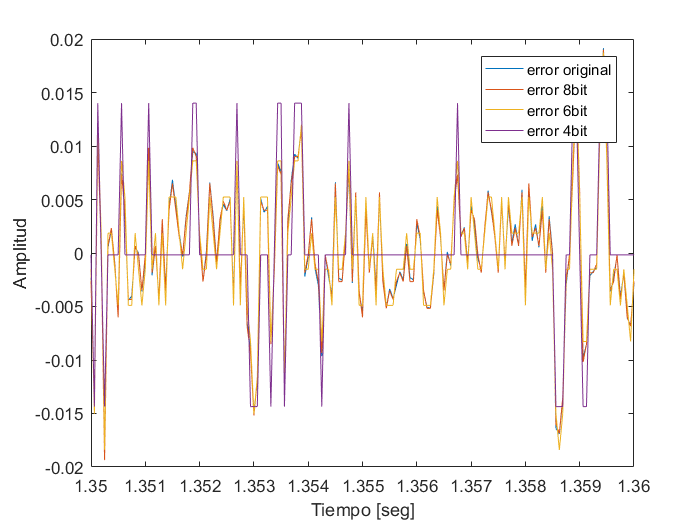
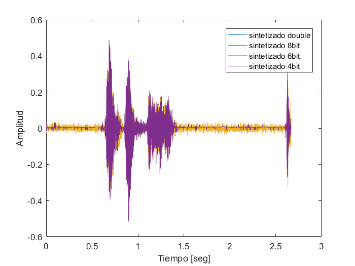

Práctica 4: Linear Predictive Coding(LPC)
Vázquez Matías - Padron:91523 - mfvazquezfiuba@gmail.com
Contents
- LPC y la envolvente del espectro: chequeo
- Constantes utilizadas
- Comparación de la señal temporal y la predicha
- Envolvente de la señal temporal y la predicha
- LPC y la envolvente del espectro: Análisis en todo el audio
- Constantes utilizadas
- Calculo anterior sobre toda la señal
- Envolventes de las vocales
- Comparación de la superficie obtenida con el espectrograma
- LPC aplicado a codificación
- Obtención del error y sintetizado de la señal
- Errores redondeados
- Grafico de los errores y las señales sintetizadas
- Errores
- Señales sintetizadas
LPC y la envolvente del espectro: chequeo
Se realizará un chequeo aplicando LPC a una sección específica de ancho temporal fijo sobre una señal, para observar la envolvente del espectro.
Constantes utilizadas
- ventana: el ancho de la ventana utiliaza, en mseg.
- ancho: es la cantidad de elementos del audio que componen 25 mseg de audio.
- inicio: subindice a partir del cual se aplica la ventana.
- M: numero de coeficientes utilizados
- t: eje X de los gráficos en función del tiempo.
- f: eje X de los gráficos en función de la frecuencia.
close all clear [audio, Fs] = audioread('fantasia.wav'); ventana = 25e-3; ancho = ventana * Fs; inicio = 14000; M = 20; S = audio(inicio:inicio+ancho-1); t = 0:1/Fs:ventana-1/Fs; t = t*1e3; % Paso el tiempo a mseg. f = 0:Fs/ancho:Fs - Fs/ancho;
Comparación de la señal temporal y la predicha
Mediante la autocorrelación del fragmento de audio, se obtienen los coeficientes rho, y luego con estos se obtienen los coeficientes LPC. Con estos coeficientes se obtiene la señal de audio predicha utilizando la función filter. Luego restando la señal temporal y la predicha se obtiene el error. Se observa que tiene picos espaciados aproximadamente en 5 mseg. Y que tiene una amplitud máxima de alrededor 0.07, exceptuando los primeros subindices del error ya que la señal temporal es un audio empezado, y la predicha se obtiene utilizando condiciones iniciales nulas.
autocorrelacion = xcorr(S); rho = autocorrelacion(ancho:ancho+M-1); % rho = [rho(0) rho(1) ... rho(M)] subindices = toeplitz(1:M-1); R = rho(subindices); B= R\rho(2:M); % inv(R) * rho(2:M) S_estimado = filter([0; B],1 ,S); % Filter es un filtro causal figure plot(t, S,'b') hold on plot(t, S_estimado,'r'); xlabel('tiempo [ms]') ylabel('Amplitud') legend('señal original','señal predicha') error = S_estimado-S; figure plot(t,error); legend('error') xlabel('tiempo [ms]') ylabel('Amplitud')


Envolvente de la señal temporal y la predicha
Se muestra un gráfico de la envolvente del espectro del audio ventaneado. Para la señal temporal se usa la función fft mientras que para la predicha se usa la función freqz que devuelve la respuesta en frecuencia del filtro. Se verifica que el primer pico se encuentra en los 720Hz, por lo que esta sección de audio se trataría de la vocal a.
G = sqrt( rho(1) - B' * rho(2:end)); fft_S = abs(fft(S)); fft_S_estimado = abs(freqz(G,[1;-B], ancho, 'whole')); figure plot(f(1:ancho/2),fft_S(1:ancho/2),'b') hold on plot(f(1:ancho/2),fft_S_estimado(1:ancho/2),'r'); legend('FFT(S)', 'FFT(S estimada)') xlabel('Frecuencia [Hz]') ylabel('Amplitud')

LPC y la envolvente del espectro: Análisis en todo el audio
Se realizará el mismo análisis que en el intervalo de 25mseg anterior pero a todo el audio. Se recorrerá el audio cada 10mseg aplicando ventanas de 25mseg para obtener la envolvente del espectro en cada sección, de forma de obtener una superficie que será semejante a un espectrograma.
Constantes utilizadas
- paso: intervalo en tiempo que hay entre cada sección de audio tomada.
- inicios: vector con la posición del audio donde se inicia el analisis.
clearvars -except audio Fs M ventana ancho paso = 10e-3; inicios = 1:paso*Fs:length(audio)-ancho;
Calculo anterior sobre toda la señal
for x = 1:length(inicios) S = audio(inicios(x):inicios(x)+ancho-1); % S_estimado autocorrelacion = xcorr(S); rho = autocorrelacion(ancho:ancho+M-1); % rho = [rho(0) rho(1) ... rho(M)] subindices = toeplitz(1:M-1); R = rho(subindices); B= R\rho(2:M); % inv(R) * rho(2:M) coeficientes(:,x) = B; % FFT G = sqrt( rho(1) - B' * rho(2:end)); fft_S_estimado_actual = abs(freqz(G,[1;-B], ancho, 'whole')); fft_S_estimado(:,x) = fft_S_estimado_actual(1:ancho/2); end
Envolventes de las vocales
Se graficara la envolvente de cada vocal del audio. Se observa que las vocales a contienen su primer formante alrededor de los 750Hz y la i alrededor de los 350 Hz.
subindices = [72 90 124 135]; f = 0:Fs/ancho:Fs - Fs/ancho; figure for x = subindices plot(f(1:ancho/2),fft_S_estimado(:,x)) hold on end legend('a','a','i','a') xlabel('Frecuencia [Hz]') ylabel('Amplitud') xlim([0 4e3])

Comparación de la superficie obtenida con el espectrograma
Se grafica el espectrograma del audio junto al gráfico de la superficie obtenida. Como es de esperarse, la superficie obtenida esta compuesta por curvas mas suaves que las obtenidas mediante DFT.
Noverlap = Fs*(ventana-paso)/2; figure spectrogram(audio, hanning(ancho) ,Noverlap, length(audio), Fs, 'yaxis') colormap winter xlabel('Tiempo [seg]') ylabel('Frecuencia [kHz]') t = (inicios-1)/Fs; figure surf(t,f(1:ancho/2)/1e3,log10(fft_S_estimado)) colormap winter shading interp set(gca,'xlim',[0 t(end)+paso], 'ylim', [0 Fs/2e3]); view(2) xlabel('Tiempo [seg]') ylabel('Frecuencia [kHz]') 
LPC aplicado a codificación
Se realizarán simulaciones de la aplicacion de LPC para codificación. Hasta ahora se ha dividido la información de la señal en los coeficientes que dan información del espectro de la señal y la información del error de predicción. A partir del error y los coeficientes se construirá la señal original.
Obtención del error y sintetizado de la señal
Mediante la función filter se obtiene el error de cada segmento de la señal. Se aplicará solo a porciones de audio de 10mseg, ya que al filtrar 25mseg pero luego tomar solo 10mseg de error, el error es mayor. Luego se utiliza la función sintetizar que reconstruye el audio en base al error y los coeficientes. Se observa que el audio original y el sintetizado son exactamente iguales, a excepcion de los primeros subindices por las condiciones iniciales nulas utilizadas. Finalmente se grafica un zoom de la señal para que se pueda apreciar que las señales son exactamente iguales.
zf = zeros(M-1,1); % condiciones iniciales error = []; for x = 1:length(inicios) S = audio(inicios(x):inicios(x)+paso*Fs-1); [error_actual, zf] = filter([-1;coeficientes(:,x)], 1, S, zf); error = [error error_actual']; end S_recibida = sintetizar(error, coeficientes, Fs*paso, zf); t_audio_sintetizado = 0:1/Fs:length(S_recibida)/Fs - 1/Fs; figure plot(t_audio_sintetizado, S_recibida) hold on plot(t_audio_sintetizado, audio(1:length(t_audio_sintetizado))) legend('audio recibido','audio original') xlabel('Tiempo [seg]') ylabel('Amplitud') figure plot(t_audio_sintetizado, S_recibida) hold on plot(t_audio_sintetizado, audio(1:length(t_audio_sintetizado))) legend('audio recibido','audio original') xlabel('Tiempo [seg]') ylabel('Amplitud') xlim([1.35 1.4])

Errores redondeados
A continuación se redondeará a punto fijo de 8, 6 y 4 bits y se sintetizará nuevamente la señal. Para esto se utilizarán las funciones implementadas redondear y sintetizar. Finalmente se graficarán las señales sintetizadas y se reproducira un audio para comparar dichas señales. En el audio se reproducirá primero el audio original, luego el audio sintetizado sin redondear y finalmente los audios sintetizados de 8, 6 y 4 bits. Ver la función sintetizar y redondear para mas detalles sobre su implementacion.
% Redondeando a punto fijo de 8bit error_8bit = redondear(error, 8); S_recibida_8bit = sintetizar(error_8bit, coeficientes, Fs*paso, zf); % Redondeando a punto fijo de 6bit error_6bit = redondear(error, 6); S_recibida_6bit = sintetizar(error_6bit, coeficientes, Fs*paso, zf); % Redondeando a punto fijo de 4bit error_4bit = redondear(error, 4); S_recibida_4bit = sintetizar(error_4bit, coeficientes, Fs*paso, zf); t_error = 0:1/Fs:(length(error)-1)/Fs; % Reproduzco los audios sound([audio' S_recibida S_recibida_8bit S_recibida_6bit S_recibida_4bit], Fs); t_salida = 0:1/Fs:(length(S_recibida)-1)/Fs; bits_totales_16bit = length(error) * 16; bits_ahorrados_8bit = bits_totales_16bit - length(error_8bit)*8; bits_ahorrados_6bit = bits_totales_16bit - length(error_6bit)*6; bits_ahorrados_4bit = bits_totales_16bit - length(error_4bit)*4; % Los paso a Kbits; bits_ahorrados_8bit = bits_ahorrados_8bit * 1e-3; bits_ahorrados_6bit = bits_ahorrados_6bit * 1e-3; bits_ahorrados_4bit = bits_ahorrados_4bit * 1e-3; disp(['Bits ahorrados utilizando 8 bits = ' num2str(bits_ahorrados_8bit) ' kbit']); disp(['Bits ahorrados utilizando 6 bits = ' num2str(bits_ahorrados_6bit) ' kbit']); disp(['Bits ahorrados utilizando 4 bits = ' num2str(bits_ahorrados_4bit) ' kbit']);
Bits ahorrados utilizando 8 bits = 343.04 kbit Bits ahorrados utilizando 6 bits = 428.8 kbit Bits ahorrados utilizando 4 bits = 514.56 kbit
Grafico de los errores y las señales sintetizadas
A continuacion se grafican los errores con distintos redondeos para poder compararlos con el original. Se grafica el error total y en una porcion de la señal para tener una mejor visualización. Luego se realiza lo mismo pero con las señales sintetizadas.
Errores
figure plot(t_error,error) hold on plot(t_error,error_8bit) hold on plot(t_error,error_6bit) hold on plot(t_error,error_4bit) legend('error original', 'error 8bit', 'error 6bit', 'error 4bit'); xlabel('Tiempo [seg]') ylabel('Amplitud') figure plot(t_error,error) hold on plot(t_error,error_8bit) hold on plot(t_error,error_6bit) hold on plot(t_error,error_4bit) legend('error original', 'error 8bit', 'error 6bit', 'error 4bit'); xlabel('Tiempo [seg]') ylabel('Amplitud') xlim([1.35 1.36]) 
Señales sintetizadas
figure plot(t_salida, S_recibida) hold on plot(t_salida,S_recibida_8bit) hold on plot(t_salida,S_recibida_6bit) hold on plot(t_salida,S_recibida_4bit) legend('sintetizado double', 'sintetizado 8bit', 'sintetizado 6bit', 'sintetizado 4bit'); xlabel('Tiempo [seg]') ylabel('Amplitud') figure plot(t_salida, S_recibida) hold on plot(t_salida,S_recibida_8bit) hold on plot(t_salida,S_recibida_6bit) hold on plot(t_salida,S_recibida_4bit) legend('sintetizado double', 'sintetizado 8bit', 'sintetizado 6bit', 'sintetizado 4bit'); xlabel('Tiempo [seg]') ylabel('Amplitud') xlim([1.35 1.36])